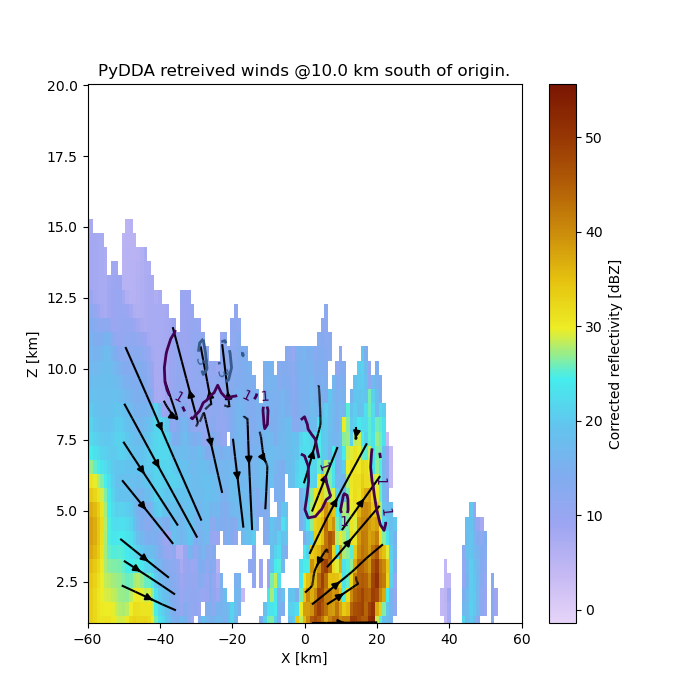

Note
Go to the end to download the full example code
Example on geographic plotting and constraint variation#
In this example we show how to plot wind fields on a map and change the default constraint coefficients using PyDDA.
This shows how important it is to have the proper intitial state and constraints when you derive your wind fields. In the first figure, the sounding was used as the initial state, but for the latter two examples we use a zero initial state which provides for more questionable winds at the edges of the Dual Doppler Lobes.
This shows that your initial state and background are key to providing a physically realistic retrieval. Assuming a zero background will likely result in false regions of convergence and divergence that will generate artificial updrafts and downdrafts at the edges of data coverage.


- 
/usr/share/miniconda3/envs/pydda-docs/lib/python3.11/site-packages/pyart/io/cfradial.py:408: UserWarning: WARNING: valid_min not used since it
cannot be safely cast to variable data type
data = self.ncvar[:]
/usr/share/miniconda3/envs/pydda-docs/lib/python3.11/site-packages/pyart/io/cfradial.py:408: UserWarning: WARNING: valid_max not used since it
cannot be safely cast to variable data type
data = self.ncvar[:]
Interpolating sounding to radar grid
Interpolated U field:
tf.Tensor(
[ 0.60573435 1.0229144 6.434673 11.977132 12.919597
9.719978 14.212554 17.673002 9.373551 4.932108
7.0470777 4.581866 3.8447456 1.9784147 -2.7835784
-4.8090096 -8.388001 -8.310871 -6.199968 -8.8743305
-7.5828705 -6.553336 -7.493186 -8.902025 -11.6616335
-13.175965 -15.263804 -16.580751 -17.48236 -23.17236
-20.712376 -18.823587 -16.356308 -25.138748 -29.280111
-28.940443 -19.437548 -10.714591 -9.689518 ], shape=(39,), dtype=float32)
Interpolated V field:
tf.Tensor(
[-6.9235525 -6.326603 -6.434671 -6.9149985 -6.5828586 -3.927123
-6.6274214 -8.241055 -9.051932 -3.2364333 0.8652741 -1.430016
0.54577833 -1.4374017 -0.30149823 3.5418017 4.45998 5.19321
5.667021 7.446448 10.062807 10.487528 11.109102 10.993081
9.54446 11.055948 9.912431 11.183857 9.295537 2.4355142
-0.723292 -1.9784379 1.1915643 5.803736 3.5951443 -2.0237138
2.7317686 6.437976 2.7784247 ], shape=(39,), dtype=float32)
Grid levels:
[ 1000. 1500. 2000. 2500. 3000. 3500. 4000. 4500. 5000. 5500.
6000. 6500. 7000. 7500. 8000. 8500. 9000. 9500. 10000. 10500.
11000. 11500. 12000. 12500. 13000. 13500. 14000. 14500. 15000. 15500.
16000. 16500. 17000. 17500. 18000. 18500. 19000. 19500. 20000.]
/home/runner/work/PyDDA/PyDDA/pydda/retrieval/angles.py:24: RuntimeWarning: invalid value encountered in arccos
elev = np.arccos((Re**2 + slantrsq - rh**2)/(2 * Re * slantr))
Calculating weights for radars 0 and 1
Calculating weights for radars 1 and 0
Calculating weights for models...
Points from Radar 0: 40597
Points from Radar 1: 40597
Starting solver
rmsVR = 6.827304
Total points: 81194
The max of w_init is 0.0
Nfeval | Jvel | Jmass | Jsmooth | Jbg | Jvort | Jmodel | Jpoint | Max w
0|559642.2500| 0.0000| 0.0000| 0.0000| 0.0000| 0.0000| 0.0000| 0.0000
The gradient of the cost functions is 158.62964
Nfeval | Jvel | Jmass | Jsmooth | Jbg | Jvort | Jmodel | Jpoint | Max w
10|26130.5117| 382.9626| 0.0000|4071.4351| 0.0000| 0.0000| 0.0000| 15.5264
The gradient of the cost functions is 36.597073
Nfeval | Jvel | Jmass | Jsmooth | Jbg | Jvort | Jmodel | Jpoint | Max w
20|18971.3613| 490.3067| 0.0000|3393.5815| 0.0000| 0.0000| 0.0000| 14.6217
The gradient of the cost functions is 17.108273
Nfeval | Jvel | Jmass | Jsmooth | Jbg | Jvort | Jmodel | Jpoint | Max w
30|18032.9668| 489.6299| 0.0000|3430.0486| 0.0000| 0.0000| 0.0000| 14.4372
The gradient of the cost functions is 59.34758
Nfeval | Jvel | Jmass | Jsmooth | Jbg | Jvort | Jmodel | Jpoint | Max w
40|17750.8301| 466.1873| 0.0000|3332.8171| 0.0000| 0.0000| 0.0000| 18.8427
The gradient of the cost functions is 18.29371
Nfeval | Jvel | Jmass | Jsmooth | Jbg | Jvort | Jmodel | Jpoint | Max w
50|16674.0078| 374.4199| 0.0000|3073.3652| 0.0000| 0.0000| 0.0000| 64.4673
The gradient of the cost functions is 33.54728
Nfeval | Jvel | Jmass | Jsmooth | Jbg | Jvort | Jmodel | Jpoint | Max w
60|15543.4268| 306.3219| 0.0000|2838.9236| 0.0000| 0.0000| 0.0000| 122.3628
The gradient of the cost functions is 17.475004
Nfeval | Jvel | Jmass | Jsmooth | Jbg | Jvort | Jmodel | Jpoint | Max w
70|14607.2051| 286.1732| 0.0000|2732.7402| 0.0000| 0.0000| 0.0000| 163.7126
The gradient of the cost functions is 73.82048
Nfeval | Jvel | Jmass | Jsmooth | Jbg | Jvort | Jmodel | Jpoint | Max w
80|14214.8330| 282.7234| 0.0000|2659.4236| 0.0000| 0.0000| 0.0000| 182.8911
The gradient of the cost functions is 11.0786915
Nfeval | Jvel | Jmass | Jsmooth | Jbg | Jvort | Jmodel | Jpoint | Max w
90|13688.3906| 276.4021| 0.0000|2531.6599| 0.0000| 0.0000| 0.0000| 209.6049
The gradient of the cost functions is 16.031038
Nfeval | Jvel | Jmass | Jsmooth | Jbg | Jvort | Jmodel | Jpoint | Max w
100|13409.4785| 272.0520| 0.0000|2486.3435| 0.0000| 0.0000| 0.0000| 223.4294
The gradient of the cost functions is 60.61282
Nfeval | Jvel | Jmass | Jsmooth | Jbg | Jvort | Jmodel | Jpoint | Max w
110|13153.8242| 264.4493| 0.0000|2446.9255| 0.0000| 0.0000| 0.0000| 234.6842
The gradient of the cost functions is 9.253549
Nfeval | Jvel | Jmass | Jsmooth | Jbg | Jvort | Jmodel | Jpoint | Max w
120|12844.2100| 249.1004| 0.0000|2376.6252| 0.0000| 0.0000| 0.0000| 247.2666
The gradient of the cost functions is 7.9254956
Nfeval | Jvel | Jmass | Jsmooth | Jbg | Jvort | Jmodel | Jpoint | Max w
130|12558.0078| 234.9919| 0.0000|2339.0354| 0.0000| 0.0000| 0.0000| 261.2097
The gradient of the cost functions is 8.595208
Nfeval | Jvel | Jmass | Jsmooth | Jbg | Jvort | Jmodel | Jpoint | Max w
140|12395.8438| 227.3731| 0.0000|2312.0710| 0.0000| 0.0000| 0.0000| 266.9670
The gradient of the cost functions is 8.846936
Nfeval | Jvel | Jmass | Jsmooth | Jbg | Jvort | Jmodel | Jpoint | Max w
150|12205.1846| 213.5754| 0.0000|2271.5303| 0.0000| 0.0000| 0.0000| 281.1895
The gradient of the cost functions is 7.579497
Nfeval | Jvel | Jmass | Jsmooth | Jbg | Jvort | Jmodel | Jpoint | Max w
160|12030.6328| 202.7401| 0.0000|2245.4678| 0.0000| 0.0000| 0.0000| 293.4454
The gradient of the cost functions is 44.36049
Nfeval | Jvel | Jmass | Jsmooth | Jbg | Jvort | Jmodel | Jpoint | Max w
170|11914.6406| 195.1001| 0.0000|2227.8098| 0.0000| 0.0000| 0.0000| 301.5674
The gradient of the cost functions is 6.07333
Nfeval | Jvel | Jmass | Jsmooth | Jbg | Jvort | Jmodel | Jpoint | Max w
180|11780.9883| 187.9669| 0.0000|2200.1680| 0.0000| 0.0000| 0.0000| 310.4844
The gradient of the cost functions is 5.08617
Nfeval | Jvel | Jmass | Jsmooth | Jbg | Jvort | Jmodel | Jpoint | Max w
190|11702.7188| 183.5135| 0.0000|2190.3638| 0.0000| 0.0000| 0.0000| 323.7044
The gradient of the cost functions is 24.117167
Nfeval | Jvel | Jmass | Jsmooth | Jbg | Jvort | Jmodel | Jpoint | Max w
200|11618.0820| 181.2371| 0.0000|2176.6062| 0.0000| 0.0000| 0.0000| 328.0698
The gradient of the cost functions is 5.0577617
Nfeval | Jvel | Jmass | Jsmooth | Jbg | Jvort | Jmodel | Jpoint | Max w
210|11527.6621| 176.3502| 0.0000|2157.7363| 0.0000| 0.0000| 0.0000| 337.9010
The gradient of the cost functions is 4.367197
Nfeval | Jvel | Jmass | Jsmooth | Jbg | Jvort | Jmodel | Jpoint | Max w
220|11466.2441| 171.4325| 0.0000|2152.9272| 0.0000| 0.0000| 0.0000| 353.7270
The gradient of the cost functions is 23.976362
Nfeval | Jvel | Jmass | Jsmooth | Jbg | Jvort | Jmodel | Jpoint | Max w
230|11408.8564| 169.0426| 0.0000|2142.2344| 0.0000| 0.0000| 0.0000| 359.7861
The gradient of the cost functions is 4.176504
Nfeval | Jvel | Jmass | Jsmooth | Jbg | Jvort | Jmodel | Jpoint | Max w
240|11344.6182| 164.6061| 0.0000|2128.6104| 0.0000| 0.0000| 0.0000| 373.1705
The gradient of the cost functions is 3.5793765
Nfeval | Jvel | Jmass | Jsmooth | Jbg | Jvort | Jmodel | Jpoint | Max w
250|11311.6113| 159.5042| 0.0000|2133.1208| 0.0000| 0.0000| 0.0000| 389.1096
The gradient of the cost functions is 12.580392
Nfeval | Jvel | Jmass | Jsmooth | Jbg | Jvort | Jmodel | Jpoint | Max w
260|11253.5547| 157.3535| 0.0000|2121.1335| 0.0000| 0.0000| 0.0000| 392.9562
The gradient of the cost functions is 3.5444446
Nfeval | Jvel | Jmass | Jsmooth | Jbg | Jvort | Jmodel | Jpoint | Max w
270|11212.0059| 153.3006| 0.0000|2109.1160| 0.0000| 0.0000| 0.0000| 403.4438
The gradient of the cost functions is 2.79147
Nfeval | Jvel | Jmass | Jsmooth | Jbg | Jvort | Jmodel | Jpoint | Max w
280|11206.2637| 148.4919| 0.0000|2141.8188| 0.0000| 0.0000| 0.0000| 420.2546
The gradient of the cost functions is 8.835861
Nfeval | Jvel | Jmass | Jsmooth | Jbg | Jvort | Jmodel | Jpoint | Max w
290|11139.7305| 147.3608| 0.0000|2102.7249| 0.0000| 0.0000| 0.0000| 421.0657
The gradient of the cost functions is 3.0525928
Nfeval | Jvel | Jmass | Jsmooth | Jbg | Jvort | Jmodel | Jpoint | Max w
300|11107.9668| 144.4033| 0.0000|2094.8997| 0.0000| 0.0000| 0.0000| 429.3805
The gradient of the cost functions is 2.5379467
Nfeval | Jvel | Jmass | Jsmooth | Jbg | Jvort | Jmodel | Jpoint | Max w
310|11101.9746| 140.4870| 0.0000|2104.9795| 0.0000| 0.0000| 0.0000| 441.7443
The gradient of the cost functions is 7.285393
Nfeval | Jvel | Jmass | Jsmooth | Jbg | Jvort | Jmodel | Jpoint | Max w
320|11053.8779| 139.4210| 0.0000|2089.3899| 0.0000| 0.0000| 0.0000| 443.3749
The gradient of the cost functions is 2.620092
Nfeval | Jvel | Jmass | Jsmooth | Jbg | Jvort | Jmodel | Jpoint | Max w
330|11030.0352| 137.0582| 0.0000|2084.2024| 0.0000| 0.0000| 0.0000| 449.5375
The gradient of the cost functions is 2.2863376
Nfeval | Jvel | Jmass | Jsmooth | Jbg | Jvort | Jmodel | Jpoint | Max w
340|11040.7451| 132.7930| 0.0000|2128.9448| 0.0000| 0.0000| 0.0000| 461.0066
The gradient of the cost functions is 4.433815
Nfeval | Jvel | Jmass | Jsmooth | Jbg | Jvort | Jmodel | Jpoint | Max w
350|10983.3838| 131.7672| 0.0000|2079.5496| 0.0000| 0.0000| 0.0000| 461.3635
The gradient of the cost functions is 2.0171018
Nfeval | Jvel | Jmass | Jsmooth | Jbg | Jvort | Jmodel | Jpoint | Max w
360|10958.8496| 129.0043| 0.0000|2076.9944| 0.0000| 0.0000| 0.0000| 467.4312
The gradient of the cost functions is 14.222183
Nfeval | Jvel | Jmass | Jsmooth | Jbg | Jvort | Jmodel | Jpoint | Max w
370|10946.9619| 127.7839| 0.0000|2074.1357| 0.0000| 0.0000| 0.0000| 470.0288
The gradient of the cost functions is 3.448812
Nfeval | Jvel | Jmass | Jsmooth | Jbg | Jvort | Jmodel | Jpoint | Max w
380|10929.8887| 125.5376| 0.0000|2071.2871| 0.0000| 0.0000| 0.0000| 473.5926
The gradient of the cost functions is 2.0516164
Nfeval | Jvel | Jmass | Jsmooth | Jbg | Jvort | Jmodel | Jpoint | Max w
390|10910.0254| 122.9260| 0.0000|2071.0906| 0.0000| 0.0000| 0.0000| 477.3062
The gradient of the cost functions is 1.68885
Nfeval | Jvel | Jmass | Jsmooth | Jbg | Jvort | Jmodel | Jpoint | Max w
400|10892.6465| 120.9352| 0.0000|2068.0271| 0.0000| 0.0000| 0.0000| 480.2476
The gradient of the cost functions is 1.9005221
Nfeval | Jvel | Jmass | Jsmooth | Jbg | Jvort | Jmodel | Jpoint | Max w
410|10883.0908| 119.7815| 0.0000|2065.7810| 0.0000| 0.0000| 0.0000| 481.6053
The gradient of the cost functions is 2.9054277
Nfeval | Jvel | Jmass | Jsmooth | Jbg | Jvort | Jmodel | Jpoint | Max w
420|10867.9629| 117.7534| 0.0000|2065.3037| 0.0000| 0.0000| 0.0000| 483.3615
The gradient of the cost functions is 2.4602818
Nfeval | Jvel | Jmass | Jsmooth | Jbg | Jvort | Jmodel | Jpoint | Max w
430|10919.5449| 114.4655| 0.0000|2090.1213| 0.0000| 0.0000| 0.0000| 485.8299
The gradient of the cost functions is 1.8027453
Nfeval | Jvel | Jmass | Jsmooth | Jbg | Jvort | Jmodel | Jpoint | Max w
440|10845.7627| 114.7618| 0.0000|2061.2048| 0.0000| 0.0000| 0.0000| 484.8903
The gradient of the cost functions is 2.461609
Nfeval | Jvel | Jmass | Jsmooth | Jbg | Jvort | Jmodel | Jpoint | Max w
450|10835.4004| 113.0963| 0.0000|2060.6550| 0.0000| 0.0000| 0.0000| 485.0492
The gradient of the cost functions is 2.1645126
Nfeval | Jvel | Jmass | Jsmooth | Jbg | Jvort | Jmodel | Jpoint | Max w
460|10873.3711| 110.0305| 0.0000|2075.6191| 0.0000| 0.0000| 0.0000| 484.2643
The gradient of the cost functions is 1.6988205
Nfeval | Jvel | Jmass | Jsmooth | Jbg | Jvort | Jmodel | Jpoint | Max w
470|10817.5645| 110.2706| 0.0000|2058.2441| 0.0000| 0.0000| 0.0000| 484.3195
The gradient of the cost functions is 2.0824368
Nfeval | Jvel | Jmass | Jsmooth | Jbg | Jvort | Jmodel | Jpoint | Max w
480|10809.7061| 108.5818| 0.0000|2056.8577| 0.0000| 0.0000| 0.0000| 483.2464
The gradient of the cost functions is 1.873397
Nfeval | Jvel | Jmass | Jsmooth | Jbg | Jvort | Jmodel | Jpoint | Max w
490|10847.9697| 105.5392| 0.0000|2073.2705| 0.0000| 0.0000| 0.0000| 519.9066
The gradient of the cost functions is 1.7822754
Nfeval | Jvel | Jmass | Jsmooth | Jbg | Jvort | Jmodel | Jpoint | Max w
500|10791.7588| 105.8412| 0.0000|2055.7520| 0.0000| 0.0000| 0.0000| 508.5755
The gradient of the cost functions is 2.1427283
Nfeval | Jvel | Jmass | Jsmooth | Jbg | Jvort | Jmodel | Jpoint | Max w
510|10785.5029| 104.5250| 0.0000|2054.2161| 0.0000| 0.0000| 0.0000| 522.4568
The gradient of the cost functions is 11.019097
Nfeval | Jvel | Jmass | Jsmooth | Jbg | Jvort | Jmodel | Jpoint | Max w
520|10776.9775| 103.3231| 0.0000|2054.9133| 0.0000| 0.0000| 0.0000| 536.1901
The gradient of the cost functions is 1.353604
Nfeval | Jvel | Jmass | Jsmooth | Jbg | Jvort | Jmodel | Jpoint | Max w
530|10769.2969| 101.9834| 0.0000|2053.3628| 0.0000| 0.0000| 0.0000| 552.9108
The gradient of the cost functions is 2.1077802
Nfeval | Jvel | Jmass | Jsmooth | Jbg | Jvort | Jmodel | Jpoint | Max w
540|10764.5488| 101.2346| 0.0000|2053.2439| 0.0000| 0.0000| 0.0000| 562.6788
The gradient of the cost functions is 9.516896
Nfeval | Jvel | Jmass | Jsmooth | Jbg | Jvort | Jmodel | Jpoint | Max w
550|10757.6582| 100.1041| 0.0000|2053.6755| 0.0000| 0.0000| 0.0000| 576.1837
The gradient of the cost functions is 1.7056386
Nfeval | Jvel | Jmass | Jsmooth | Jbg | Jvort | Jmodel | Jpoint | Max w
560|10751.8145| 98.6677| 0.0000|2051.2102| 0.0000| 0.0000| 0.0000| 594.4660
The gradient of the cost functions is 1.6324532
Nfeval | Jvel | Jmass | Jsmooth | Jbg | Jvort | Jmodel | Jpoint | Max w
570|10745.4531| 97.6584| 0.0000|2051.0825| 0.0000| 0.0000| 0.0000| 609.3251
The gradient of the cost functions is 1.5362461
Nfeval | Jvel | Jmass | Jsmooth | Jbg | Jvort | Jmodel | Jpoint | Max w
580|10741.3320| 96.9189| 0.0000|2050.7104| 0.0000| 0.0000| 0.0000| 619.3764
The gradient of the cost functions is 1.7649317
Nfeval | Jvel | Jmass | Jsmooth | Jbg | Jvort | Jmodel | Jpoint | Max w
590|10735.8760| 95.6771| 0.0000|2050.5342| 0.0000| 0.0000| 0.0000| 635.5566
The gradient of the cost functions is 1.6610043
Nfeval | Jvel | Jmass | Jsmooth | Jbg | Jvort | Jmodel | Jpoint | Max w
600|10730.2051| 94.3897| 0.0000|2049.4216| 0.0000| 0.0000| 0.0000| 654.1328
The gradient of the cost functions is 1.3871136
Nfeval | Jvel | Jmass | Jsmooth | Jbg | Jvort | Jmodel | Jpoint | Max w
610|10722.4570| 92.9304| 0.0000|2064.3171| 0.0000| 0.0000| 0.0000| 678.1376
The gradient of the cost functions is 1.8017776
Nfeval | Jvel | Jmass | Jsmooth | Jbg | Jvort | Jmodel | Jpoint | Max w
620|10720.9463| 92.5482| 0.0000|2048.7144| 0.0000| 0.0000| 0.0000| 683.3580
The gradient of the cost functions is 1.4873233
Nfeval | Jvel | Jmass | Jsmooth | Jbg | Jvort | Jmodel | Jpoint | Max w
630|10717.4121| 91.8133| 0.0000|2048.0203| 0.0000| 0.0000| 0.0000| 695.4266
The gradient of the cost functions is 1.192631
Nfeval | Jvel | Jmass | Jsmooth | Jbg | Jvort | Jmodel | Jpoint | Max w
640|10709.7031| 90.5993| 0.0000|2060.5996| 0.0000| 0.0000| 0.0000| 716.6245
The gradient of the cost functions is 1.7452471
Nfeval | Jvel | Jmass | Jsmooth | Jbg | Jvort | Jmodel | Jpoint | Max w
650|10709.7891| 90.1270| 0.0000|2047.5027| 0.0000| 0.0000| 0.0000| 724.1767
The gradient of the cost functions is 1.48499
Nfeval | Jvel | Jmass | Jsmooth | Jbg | Jvort | Jmodel | Jpoint | Max w
660|10705.4414| 89.3377| 0.0000|2047.4451| 0.0000| 0.0000| 0.0000| 738.3028
The gradient of the cost functions is 1.0738109
Nfeval | Jvel | Jmass | Jsmooth | Jbg | Jvort | Jmodel | Jpoint | Max w
670|10704.5010| 88.2152| 0.0000|2051.5027| 0.0000| 0.0000| 0.0000| 759.6812
The gradient of the cost functions is 1.8913152
Nfeval | Jvel | Jmass | Jsmooth | Jbg | Jvort | Jmodel | Jpoint | Max w
680|10699.2188| 87.9206| 0.0000|2046.9883| 0.0000| 0.0000| 0.0000| 764.6730
The gradient of the cost functions is 1.499507
Nfeval | Jvel | Jmass | Jsmooth | Jbg | Jvort | Jmodel | Jpoint | Max w
690|10695.9053| 87.2385| 0.0000|2046.6597| 0.0000| 0.0000| 0.0000| 777.6731
The gradient of the cost functions is 0.92461485
Nfeval | Jvel | Jmass | Jsmooth | Jbg | Jvort | Jmodel | Jpoint | Max w
700|10689.7773| 86.1343| 0.0000|2051.8064| 0.0000| 0.0000| 0.0000| 798.1397
The gradient of the cost functions is 2.9122932
Nfeval | Jvel | Jmass | Jsmooth | Jbg | Jvort | Jmodel | Jpoint | Max w
710|10690.0176| 85.6590| 0.0000|2045.8872| 0.0000| 0.0000| 0.0000| 807.2756
The gradient of the cost functions is 1.3347932
Nfeval | Jvel | Jmass | Jsmooth | Jbg | Jvort | Jmodel | Jpoint | Max w
720|10686.4980| 85.0519| 0.0000|2046.1754| 0.0000| 0.0000| 0.0000| 819.9306
The gradient of the cost functions is 0.8317748
Nfeval | Jvel | Jmass | Jsmooth | Jbg | Jvort | Jmodel | Jpoint | Max w
730|10679.3789| 84.2320| 0.0000|2053.1536| 0.0000| 0.0000| 0.0000| 837.5147
The gradient of the cost functions is 2.5424578
Nfeval | Jvel | Jmass | Jsmooth | Jbg | Jvort | Jmodel | Jpoint | Max w
740|10682.4189| 83.8359| 0.0000|2045.1057| 0.0000| 0.0000| 0.0000| 844.9264
The gradient of the cost functions is 1.3744128
Nfeval | Jvel | Jmass | Jsmooth | Jbg | Jvort | Jmodel | Jpoint | Max w
750|10679.6074| 83.1743| 0.0000|2044.9076| 0.0000| 0.0000| 0.0000| 858.2534
The gradient of the cost functions is 0.7647602
Nfeval | Jvel | Jmass | Jsmooth | Jbg | Jvort | Jmodel | Jpoint | Max w
760|10675.8154| 82.4411| 0.0000|2046.5983| 0.0000| 0.0000| 0.0000| 874.2782
The gradient of the cost functions is 5.237461
Nfeval | Jvel | Jmass | Jsmooth | Jbg | Jvort | Jmodel | Jpoint | Max w
770|10674.1406| 81.8981| 0.0000|2045.1064| 0.0000| 0.0000| 0.0000| 885.9450
The gradient of the cost functions is 1.3845495
Nfeval | Jvel | Jmass | Jsmooth | Jbg | Jvort | Jmodel | Jpoint | Max w
780|10671.3477| 81.1545| 0.0000|2044.5247| 0.0000| 0.0000| 0.0000| 902.4760
The gradient of the cost functions is 0.6390552
Nfeval | Jvel | Jmass | Jsmooth | Jbg | Jvort | Jmodel | Jpoint | Max w
790|10670.6533| 80.6369| 0.0000|2043.7048| 0.0000| 0.0000| 0.0000| 914.8401
The gradient of the cost functions is 3.3317933
Nfeval | Jvel | Jmass | Jsmooth | Jbg | Jvort | Jmodel | Jpoint | Max w
800|10667.9229| 80.3048| 0.0000|2044.4139| 0.0000| 0.0000| 0.0000| 922.2248
The gradient of the cost functions is 1.338677
Nfeval | Jvel | Jmass | Jsmooth | Jbg | Jvort | Jmodel | Jpoint | Max w
810|10665.6816| 79.6507| 0.0000|2044.0406| 0.0000| 0.0000| 0.0000| 936.0526
The gradient of the cost functions is 0.6999925
Nfeval | Jvel | Jmass | Jsmooth | Jbg | Jvort | Jmodel | Jpoint | Max w
820|10663.2051| 78.9984| 0.0000|2044.4921| 0.0000| 0.0000| 0.0000| 950.9426
The gradient of the cost functions is 5.555249
Nfeval | Jvel | Jmass | Jsmooth | Jbg | Jvort | Jmodel | Jpoint | Max w
830|10661.9775| 78.5999| 0.0000|2043.6938| 0.0000| 0.0000| 0.0000| 960.4744
The gradient of the cost functions is 1.1979518
Nfeval | Jvel | Jmass | Jsmooth | Jbg | Jvort | Jmodel | Jpoint | Max w
840|10659.3027| 78.0049| 0.0000|2043.9314| 0.0000| 0.0000| 0.0000| 975.0164
The gradient of the cost functions is 1.1790955
Nfeval | Jvel | Jmass | Jsmooth | Jbg | Jvort | Jmodel | Jpoint | Max w
850|10657.7012| 77.5594| 0.0000|2043.5354| 0.0000| 0.0000| 0.0000| 986.6296
The gradient of the cost functions is 1.1366874
Nfeval | Jvel | Jmass | Jsmooth | Jbg | Jvort | Jmodel | Jpoint | Max w
860|10656.1680| 77.0610| 0.0000|2043.0460| 0.0000| 0.0000| 0.0000| 998.9828
The gradient of the cost functions is 0.7009617
Nfeval | Jvel | Jmass | Jsmooth | Jbg | Jvort | Jmodel | Jpoint | Max w
870|10654.5938| 76.6607| 0.0000|2043.0972| 0.0000| 0.0000| 0.0000|1007.9814
The gradient of the cost functions is 0.72009146
Nfeval | Jvel | Jmass | Jsmooth | Jbg | Jvort | Jmodel | Jpoint | Max w
880|10652.6660| 76.1213| 0.0000|2043.3247| 0.0000| 0.0000| 0.0000|1019.9363
The gradient of the cost functions is 1.0226375
Nfeval | Jvel | Jmass | Jsmooth | Jbg | Jvort | Jmodel | Jpoint | Max w
890|10651.0820| 75.5495| 0.0000|2043.0909| 0.0000| 0.0000| 0.0000|1032.6171
The gradient of the cost functions is 0.87160957
Nfeval | Jvel | Jmass | Jsmooth | Jbg | Jvort | Jmodel | Jpoint | Max w
900|10656.8203| 74.6436| 0.0000|2045.0024| 0.0000| 0.0000| 0.0000|1055.9175
The gradient of the cost functions is 0.76686066
Nfeval | Jvel | Jmass | Jsmooth | Jbg | Jvort | Jmodel | Jpoint | Max w
910|10648.3799| 74.6978| 0.0000|2042.7023| 0.0000| 0.0000| 0.0000|1052.2004
The gradient of the cost functions is 0.95729804
Nfeval | Jvel | Jmass | Jsmooth | Jbg | Jvort | Jmodel | Jpoint | Max w
920|10646.9561| 74.1494| 0.0000|2042.5734| 0.0000| 0.0000| 0.0000|1064.6730
The gradient of the cost functions is 0.8318942
Nfeval | Jvel | Jmass | Jsmooth | Jbg | Jvort | Jmodel | Jpoint | Max w
930|10649.8594| 73.3394| 0.0000|2047.0575| 0.0000| 0.0000| 0.0000|1083.7124
The gradient of the cost functions is 0.65756464
Nfeval | Jvel | Jmass | Jsmooth | Jbg | Jvort | Jmodel | Jpoint | Max w
940|10644.9492| 73.4518| 0.0000|2042.2782| 0.0000| 0.0000| 0.0000|1079.6584
The gradient of the cost functions is 0.94137675
Nfeval | Jvel | Jmass | Jsmooth | Jbg | Jvort | Jmodel | Jpoint | Max w
950|10643.6230| 72.9147| 0.0000|2042.2258| 0.0000| 0.0000| 0.0000|1091.5248
The gradient of the cost functions is 0.7147647
Nfeval | Jvel | Jmass | Jsmooth | Jbg | Jvort | Jmodel | Jpoint | Max w
960|10646.7910| 72.0780| 0.0000|2045.7407| 0.0000| 0.0000| 0.0000|1111.0836
The gradient of the cost functions is 0.58593094
Nfeval | Jvel | Jmass | Jsmooth | Jbg | Jvort | Jmodel | Jpoint | Max w
970|10641.6543| 72.2505| 0.0000|2042.0903| 0.0000| 0.0000| 0.0000|1105.4153
The gradient of the cost functions is 0.80744505
Nfeval | Jvel | Jmass | Jsmooth | Jbg | Jvort | Jmodel | Jpoint | Max w
980|10640.7178| 71.8421| 0.0000|2041.9919| 0.0000| 0.0000| 0.0000|1114.2916
The gradient of the cost functions is 0.79510176
Nfeval | Jvel | Jmass | Jsmooth | Jbg | Jvort | Jmodel | Jpoint | Max w
990|10645.6436| 70.9568| 0.0000|2044.7820| 0.0000| 0.0000| 0.0000|1135.5911
The gradient of the cost functions is 0.6097128
Nfeval | Jvel | Jmass | Jsmooth | Jbg | Jvort | Jmodel | Jpoint | Max w
1000|10638.6338| 71.0943| 0.0000|2041.8427| 0.0000| 0.0000| 0.0000|1129.7869
The gradient of the cost functions is 0.734096
Nfeval | Jvel | Jmass | Jsmooth | Jbg | Jvort | Jmodel | Jpoint | Max w
1010|10637.9658| 70.6705| 0.0000|2041.6321| 0.0000| 0.0000| 0.0000|1138.0632
The gradient of the cost functions is 0.6194037
Nfeval | Jvel | Jmass | Jsmooth | Jbg | Jvort | Jmodel | Jpoint | Max w
1020|10639.1562| 69.8994| 0.0000|2045.7405| 0.0000| 0.0000| 0.0000|1154.3678
The gradient of the cost functions is 0.6288693
Nfeval | Jvel | Jmass | Jsmooth | Jbg | Jvort | Jmodel | Jpoint | Max w
1030|10636.0693| 70.0033| 0.0000|2041.7260| 0.0000| 0.0000| 0.0000|1150.6057
The gradient of the cost functions is 0.62793845
Nfeval | Jvel | Jmass | Jsmooth | Jbg | Jvort | Jmodel | Jpoint | Max w
1040|10635.4668| 69.5915| 0.0000|2041.5093| 0.0000| 0.0000| 0.0000|1158.2736
The gradient of the cost functions is 0.5710819
Nfeval | Jvel | Jmass | Jsmooth | Jbg | Jvort | Jmodel | Jpoint | Max w
1050|10634.8867| 69.2433| 0.0000|2041.2283| 0.0000| 0.0000| 0.0000|1164.6986
The gradient of the cost functions is 3.4906259
Nfeval | Jvel | Jmass | Jsmooth | Jbg | Jvort | Jmodel | Jpoint | Max w
1060|10633.5938| 68.9650| 0.0000|2041.8972| 0.0000| 0.0000| 0.0000|1169.2979
The gradient of the cost functions is 0.5035039
Nfeval | Jvel | Jmass | Jsmooth | Jbg | Jvort | Jmodel | Jpoint | Max w
1070|10633.2129| 68.5565| 0.0000|2041.4248| 0.0000| 0.0000| 0.0000|1175.7424
The gradient of the cost functions is 0.9249743
Nfeval | Jvel | Jmass | Jsmooth | Jbg | Jvort | Jmodel | Jpoint | Max w
1080|10632.4688| 68.1865| 0.0000|2041.4889| 0.0000| 0.0000| 0.0000|1181.6189
The gradient of the cost functions is 0.5670773
Nfeval | Jvel | Jmass | Jsmooth | Jbg | Jvort | Jmodel | Jpoint | Max w
1090|10631.9395| 67.7113| 0.0000|2041.1318| 0.0000| 0.0000| 0.0000|1189.1063
The gradient of the cost functions is 0.4759394
Nfeval | Jvel | Jmass | Jsmooth | Jbg | Jvort | Jmodel | Jpoint | Max w
1100|10631.1689| 67.3689| 0.0000|2041.2860| 0.0000| 0.0000| 0.0000|1193.8195
The gradient of the cost functions is 0.4974172
Nfeval | Jvel | Jmass | Jsmooth | Jbg | Jvort | Jmodel | Jpoint | Max w
1110|10630.6328| 67.0295| 0.0000|2041.2100| 0.0000| 0.0000| 0.0000|1198.5792
The gradient of the cost functions is 0.5101916
Nfeval | Jvel | Jmass | Jsmooth | Jbg | Jvort | Jmodel | Jpoint | Max w
1120|10630.1270| 66.6607| 0.0000|2041.0813| 0.0000| 0.0000| 0.0000|1203.5787
The gradient of the cost functions is 0.5081522
Nfeval | Jvel | Jmass | Jsmooth | Jbg | Jvort | Jmodel | Jpoint | Max w
1130|10629.3496| 66.2471| 0.0000|2041.2825| 0.0000| 0.0000| 0.0000|1208.4283
The gradient of the cost functions is 0.46946126
Nfeval | Jvel | Jmass | Jsmooth | Jbg | Jvort | Jmodel | Jpoint | Max w
1140|10628.6562| 65.8749| 0.0000|2041.4176| 0.0000| 0.0000| 0.0000|1212.7236
The gradient of the cost functions is 0.5904553
Nfeval | Jvel | Jmass | Jsmooth | Jbg | Jvort | Jmodel | Jpoint | Max w
1150|10628.5742| 65.6032| 0.0000|2041.0533| 0.0000| 0.0000| 0.0000|1215.9670
The gradient of the cost functions is 0.5714773
Nfeval | Jvel | Jmass | Jsmooth | Jbg | Jvort | Jmodel | Jpoint | Max w
1160|10627.9619| 65.3349| 0.0000|2041.2335| 0.0000| 0.0000| 0.0000|1218.7728
The gradient of the cost functions is 0.44572705
Nfeval | Jvel | Jmass | Jsmooth | Jbg | Jvort | Jmodel | Jpoint | Max w
1170|10629.4502| 64.8495| 0.0000|2040.6622| 0.0000| 0.0000| 0.0000|1223.5768
The gradient of the cost functions is 0.6922062
Nfeval | Jvel | Jmass | Jsmooth | Jbg | Jvort | Jmodel | Jpoint | Max w
1180|10627.6328| 64.7019| 0.0000|2040.7825| 0.0000| 0.0000| 0.0000|1224.9270
The gradient of the cost functions is 0.56742096
Nfeval | Jvel | Jmass | Jsmooth | Jbg | Jvort | Jmodel | Jpoint | Max w
1190|10626.9150| 64.4253| 0.0000|2041.0424| 0.0000| 0.0000| 0.0000|1227.5894
The gradient of the cost functions is 0.40616852
Nfeval | Jvel | Jmass | Jsmooth | Jbg | Jvort | Jmodel | Jpoint | Max w
1200|10625.0010| 63.9926| 0.0000|2043.7045| 0.0000| 0.0000| 0.0000|1231.3690
The gradient of the cost functions is 0.6763732
Nfeval | Jvel | Jmass | Jsmooth | Jbg | Jvort | Jmodel | Jpoint | Max w
1210|10626.4473| 63.8968| 0.0000|2040.9115| 0.0000| 0.0000| 0.0000|1231.9764
The gradient of the cost functions is 0.5921228
Nfeval | Jvel | Jmass | Jsmooth | Jbg | Jvort | Jmodel | Jpoint | Max w
1220|10626.1670| 63.6246| 0.0000|2040.8320| 0.0000| 0.0000| 0.0000|1233.8647
The gradient of the cost functions is 0.35100862
Nfeval | Jvel | Jmass | Jsmooth | Jbg | Jvort | Jmodel | Jpoint | Max w
1230|10624.5801| 63.1773| 0.0000|2042.5957| 0.0000| 0.0000| 0.0000|1236.8035
The gradient of the cost functions is 0.9322796
Nfeval | Jvel | Jmass | Jsmooth | Jbg | Jvort | Jmodel | Jpoint | Max w
1240|10625.5420| 63.0669| 0.0000|2040.9187| 0.0000| 0.0000| 0.0000|1237.4135
The gradient of the cost functions is 0.48245513
Nfeval | Jvel | Jmass | Jsmooth | Jbg | Jvort | Jmodel | Jpoint | Max w
1250|10625.3945| 62.8712| 0.0000|2040.8368| 0.0000| 0.0000| 0.0000|1238.4135
The gradient of the cost functions is 0.41266453
Nfeval | Jvel | Jmass | Jsmooth | Jbg | Jvort | Jmodel | Jpoint | Max w
1260|10624.5879| 62.3781| 0.0000|2042.1624| 0.0000| 0.0000| 0.0000|1240.7235
The gradient of the cost functions is 1.0202714
Nfeval | Jvel | Jmass | Jsmooth | Jbg | Jvort | Jmodel | Jpoint | Max w
1270|10624.8057| 62.2190| 0.0000|2040.8079| 0.0000| 0.0000| 0.0000|1241.3856
The gradient of the cost functions is 0.43911743
Nfeval | Jvel | Jmass | Jsmooth | Jbg | Jvort | Jmodel | Jpoint | Max w
1280|10624.6055| 62.0214| 0.0000|2040.7866| 0.0000| 0.0000| 0.0000|1242.1270
The gradient of the cost functions is 0.28079504
Nfeval | Jvel | Jmass | Jsmooth | Jbg | Jvort | Jmodel | Jpoint | Max w
1290|10623.9160| 61.7604| 0.0000|2041.4047| 0.0000| 0.0000| 0.0000|1242.8746
The gradient of the cost functions is 1.7850516
Nfeval | Jvel | Jmass | Jsmooth | Jbg | Jvort | Jmodel | Jpoint | Max w
1300|10624.1338| 61.5451| 0.0000|2040.8348| 0.0000| 0.0000| 0.0000|1243.3900
The gradient of the cost functions is 0.47505012
Nfeval | Jvel | Jmass | Jsmooth | Jbg | Jvort | Jmodel | Jpoint | Max w
1310|10623.9668| 61.2932| 0.0000|2040.7394| 0.0000| 0.0000| 0.0000|1243.8705
The gradient of the cost functions is 0.25105023
Nfeval | Jvel | Jmass | Jsmooth | Jbg | Jvort | Jmodel | Jpoint | Max w
1320|10623.4219| 61.0686| 0.0000|2041.2545| 0.0000| 0.0000| 0.0000|1244.1113
The gradient of the cost functions is 1.177379
Nfeval | Jvel | Jmass | Jsmooth | Jbg | Jvort | Jmodel | Jpoint | Max w
1330|10623.7090| 60.8907| 0.0000|2040.6932| 0.0000| 0.0000| 0.0000|1244.1866
The gradient of the cost functions is 0.48085392
Nfeval | Jvel | Jmass | Jsmooth | Jbg | Jvort | Jmodel | Jpoint | Max w
1340|10623.4238| 60.6403| 0.0000|2040.7552| 0.0000| 0.0000| 0.0000|1244.1694
The gradient of the cost functions is 0.23485546
Nfeval | Jvel | Jmass | Jsmooth | Jbg | Jvort | Jmodel | Jpoint | Max w
1350|10623.0713| 60.4177| 0.0000|2041.0356| 0.0000| 0.0000| 0.0000|1244.0037
The gradient of the cost functions is 1.8008987
Nfeval | Jvel | Jmass | Jsmooth | Jbg | Jvort | Jmodel | Jpoint | Max w
1360|10623.2334| 60.2553| 0.0000|2040.7089| 0.0000| 0.0000| 0.0000|1243.7792
The gradient of the cost functions is 0.45986542
Nfeval | Jvel | Jmass | Jsmooth | Jbg | Jvort | Jmodel | Jpoint | Max w
1370|10622.9121| 59.9950| 0.0000|2040.8459| 0.0000| 0.0000| 0.0000|1243.2653
The gradient of the cost functions is 0.2488422
Nfeval | Jvel | Jmass | Jsmooth | Jbg | Jvort | Jmodel | Jpoint | Max w
1380|10622.8271| 59.7808| 0.0000|2040.8236| 0.0000| 0.0000| 0.0000|1242.6995
The gradient of the cost functions is 1.8263668
Nfeval | Jvel | Jmass | Jsmooth | Jbg | Jvort | Jmodel | Jpoint | Max w
1390|10622.7871| 59.5825| 0.0000|2040.7306| 0.0000| 0.0000| 0.0000|1242.1155
The gradient of the cost functions is 0.46007755
Nfeval | Jvel | Jmass | Jsmooth | Jbg | Jvort | Jmodel | Jpoint | Max w
1400|10622.5859| 59.3108| 0.0000|2040.7618| 0.0000| 0.0000| 0.0000|1241.1532
The gradient of the cost functions is 0.22977611
Nfeval | Jvel | Jmass | Jsmooth | Jbg | Jvort | Jmodel | Jpoint | Max w
1410|10621.9775| 59.1208| 0.0000|2041.2657| 0.0000| 0.0000| 0.0000|1240.2955
The gradient of the cost functions is 0.26911527
Nfeval | Jvel | Jmass | Jsmooth | Jbg | Jvort | Jmodel | Jpoint | Max w
1420|10622.3887| 58.9599| 0.0000|2040.7208| 0.0000| 0.0000| 0.0000|1239.4883
The gradient of the cost functions is 0.25589678
Nfeval | Jvel | Jmass | Jsmooth | Jbg | Jvort | Jmodel | Jpoint | Max w
1430|10622.2812| 58.7323| 0.0000|2040.7273| 0.0000| 0.0000| 0.0000|1238.3177
The gradient of the cost functions is 0.26401803
Nfeval | Jvel | Jmass | Jsmooth | Jbg | Jvort | Jmodel | Jpoint | Max w
1440|10621.8730| 58.3409| 0.0000|2042.2867| 0.0000| 0.0000| 0.0000|1235.9679
The gradient of the cost functions is 0.4664461
Nfeval | Jvel | Jmass | Jsmooth | Jbg | Jvort | Jmodel | Jpoint | Max w
1450|10622.2607| 58.3108| 0.0000|2040.5842| 0.0000| 0.0000| 0.0000|1235.7241
The gradient of the cost functions is 0.23689102
Nfeval | Jvel | Jmass | Jsmooth | Jbg | Jvort | Jmodel | Jpoint | Max w
1460|10622.0918| 58.0255| 0.0000|2040.6467| 0.0000| 0.0000| 0.0000|1233.7310
The gradient of the cost functions is 0.2676684
Nfeval | Jvel | Jmass | Jsmooth | Jbg | Jvort | Jmodel | Jpoint | Max w
1470|10621.9678| 57.8359| 0.0000|2040.6770| 0.0000| 0.0000| 0.0000|1232.3409
The gradient of the cost functions is 0.36634567
Nfeval | Jvel | Jmass | Jsmooth | Jbg | Jvort | Jmodel | Jpoint | Max w
1480|10621.8818| 57.5983| 0.0000|2040.7151| 0.0000| 0.0000| 0.0000|1230.4600
The gradient of the cost functions is 0.29295433
Nfeval | Jvel | Jmass | Jsmooth | Jbg | Jvort | Jmodel | Jpoint | Max w
1490|10622.6973| 57.2077| 0.0000|2041.1290| 0.0000| 0.0000| 0.0000|1226.9547
The gradient of the cost functions is 0.2827546
Nfeval | Jvel | Jmass | Jsmooth | Jbg | Jvort | Jmodel | Jpoint | Max w
1500|10621.6250| 57.2633| 0.0000|2040.8136| 0.0000| 0.0000| 0.0000|1227.5011
The gradient of the cost functions is 0.40270102
Nfeval | Jvel | Jmass | Jsmooth | Jbg | Jvort | Jmodel | Jpoint | Max w
1510|10621.6484| 56.9722| 0.0000|2040.7372| 0.0000| 0.0000| 0.0000|1224.7820
The gradient of the cost functions is 0.31878817
Nfeval | Jvel | Jmass | Jsmooth | Jbg | Jvort | Jmodel | Jpoint | Max w
1520|10621.5840| 56.7308| 0.0000|2040.7499| 0.0000| 0.0000| 0.0000|1222.6053
The gradient of the cost functions is 0.25599155
Nfeval | Jvel | Jmass | Jsmooth | Jbg | Jvort | Jmodel | Jpoint | Max w
1530|10623.5557| 56.4054| 0.0000|2039.6481| 0.0000| 0.0000| 0.0000|1219.2273
The gradient of the cost functions is 0.2919551
Nfeval | Jvel | Jmass | Jsmooth | Jbg | Jvort | Jmodel | Jpoint | Max w
1540|10621.4775| 56.4074| 0.0000|2040.7524| 0.0000| 0.0000| 0.0000|1219.2393
The gradient of the cost functions is 0.36912364
Nfeval | Jvel | Jmass | Jsmooth | Jbg | Jvort | Jmodel | Jpoint | Max w
1550|10621.4062| 56.0716| 0.0000|2040.8123| 0.0000| 0.0000| 0.0000|1215.5607
The gradient of the cost functions is 0.2693445
Nfeval | Jvel | Jmass | Jsmooth | Jbg | Jvort | Jmodel | Jpoint | Max w
1560|10622.4844| 55.6025| 0.0000|2041.1565| 0.0000| 0.0000| 0.0000|1210.3810
The gradient of the cost functions is 0.26139024
Nfeval | Jvel | Jmass | Jsmooth | Jbg | Jvort | Jmodel | Jpoint | Max w
1570|10621.3828| 55.7189| 0.0000|2040.7322| 0.0000| 0.0000| 0.0000|1211.7528
The gradient of the cost functions is 0.33462688
Nfeval | Jvel | Jmass | Jsmooth | Jbg | Jvort | Jmodel | Jpoint | Max w
1580|10621.2383| 55.4596| 0.0000|2040.8735| 0.0000| 0.0000| 0.0000|1208.7125
The gradient of the cost functions is 0.29132026
Nfeval | Jvel | Jmass | Jsmooth | Jbg | Jvort | Jmodel | Jpoint | Max w
1590|10622.7393| 54.9496| 0.0000|2040.9156| 0.0000| 0.0000| 0.0000|1202.2738
The gradient of the cost functions is 0.25965875
Nfeval | Jvel | Jmass | Jsmooth | Jbg | Jvort | Jmodel | Jpoint | Max w
1600|10621.2344| 55.0714| 0.0000|2040.7881| 0.0000| 0.0000| 0.0000|1204.0112
The gradient of the cost functions is 0.30352038
Nfeval | Jvel | Jmass | Jsmooth | Jbg | Jvort | Jmodel | Jpoint | Max w
1610|10621.2588| 54.8117| 0.0000|2040.7767| 0.0000| 0.0000| 0.0000|1200.8207
The gradient of the cost functions is 0.26736546
Nfeval | Jvel | Jmass | Jsmooth | Jbg | Jvort | Jmodel | Jpoint | Max w
1620|10622.1465| 54.3191| 0.0000|2041.4502| 0.0000| 0.0000| 0.0000|1194.2948
The gradient of the cost functions is 0.271256
Nfeval | Jvel | Jmass | Jsmooth | Jbg | Jvort | Jmodel | Jpoint | Max w
1630|10621.2227| 54.4467| 0.0000|2040.7406| 0.0000| 0.0000| 0.0000|1196.1508
The gradient of the cost functions is 0.3033024
Nfeval | Jvel | Jmass | Jsmooth | Jbg | Jvort | Jmodel | Jpoint | Max w
1640|10621.2959| 54.1843| 0.0000|2040.6827| 0.0000| 0.0000| 0.0000|1192.7461
The gradient of the cost functions is 0.28104195
Nfeval | Jvel | Jmass | Jsmooth | Jbg | Jvort | Jmodel | Jpoint | Max w
1650|10621.3984| 53.6229| 0.0000|2042.2721| 0.0000| 0.0000| 0.0000|1185.1567
The gradient of the cost functions is 0.2750296
Nfeval | Jvel | Jmass | Jsmooth | Jbg | Jvort | Jmodel | Jpoint | Max w
1660|10621.1680| 53.7675| 0.0000|2040.7649| 0.0000| 0.0000| 0.0000|1187.2688
The gradient of the cost functions is 0.28742155
Nfeval | Jvel | Jmass | Jsmooth | Jbg | Jvort | Jmodel | Jpoint | Max w
1670|10621.0117| 53.4958| 0.0000|2040.9437| 0.0000| 0.0000| 0.0000|1183.5223
The gradient of the cost functions is 0.25188616
Nfeval | Jvel | Jmass | Jsmooth | Jbg | Jvort | Jmodel | Jpoint | Max w
1680|10621.2529| 53.2547| 0.0000|2040.6868| 0.0000| 0.0000| 0.0000|1180.1694
The gradient of the cost functions is 0.25607908
Nfeval | Jvel | Jmass | Jsmooth | Jbg | Jvort | Jmodel | Jpoint | Max w
1690|10621.0000| 53.0237| 0.0000|2040.9406| 0.0000| 0.0000| 0.0000|1177.0356
The gradient of the cost functions is 0.30640277
Nfeval | Jvel | Jmass | Jsmooth | Jbg | Jvort | Jmodel | Jpoint | Max w
1700|10621.2158| 52.7160| 0.0000|2040.7393| 0.0000| 0.0000| 0.0000|1172.7590
The gradient of the cost functions is 0.28634468
Nfeval | Jvel | Jmass | Jsmooth | Jbg | Jvort | Jmodel | Jpoint | Max w
1710|10620.8633| 52.4133| 0.0000|2041.0869| 0.0000| 0.0000| 0.0000|1168.3160
The gradient of the cost functions is 0.24921723
Nfeval | Jvel | Jmass | Jsmooth | Jbg | Jvort | Jmodel | Jpoint | Max w
1720|10620.9053| 52.1680| 0.0000|2041.0439| 0.0000| 0.0000| 0.0000|1164.8248
The gradient of the cost functions is 0.27009967
Nfeval | Jvel | Jmass | Jsmooth | Jbg | Jvort | Jmodel | Jpoint | Max w
1730|10620.9102| 51.8955| 0.0000|2041.0425| 0.0000| 0.0000| 0.0000|1160.9496
The gradient of the cost functions is 0.24401978
Nfeval | Jvel | Jmass | Jsmooth | Jbg | Jvort | Jmodel | Jpoint | Max w
1740|10621.0127| 51.6225| 0.0000|2040.9421| 0.0000| 0.0000| 0.0000|1156.9319
The gradient of the cost functions is 0.29498023
Nfeval | Jvel | Jmass | Jsmooth | Jbg | Jvort | Jmodel | Jpoint | Max w
1750|10621.1396| 51.4474| 0.0000|2040.8206| 0.0000| 0.0000| 0.0000|1154.3508
The gradient of the cost functions is 0.2971237
Nfeval | Jvel | Jmass | Jsmooth | Jbg | Jvort | Jmodel | Jpoint | Max w
1760|10620.8018| 51.2696| 0.0000|2041.1514| 0.0000| 0.0000| 0.0000|1151.7993
The gradient of the cost functions is 0.34179735
Nfeval | Jvel | Jmass | Jsmooth | Jbg | Jvort | Jmodel | Jpoint | Max w
1770|10621.0000| 50.9104| 0.0000|2040.9630| 0.0000| 0.0000| 0.0000|1146.5433
The gradient of the cost functions is 0.26381344
Nfeval | Jvel | Jmass | Jsmooth | Jbg | Jvort | Jmodel | Jpoint | Max w
1780|10620.9473| 50.6379| 0.0000|2041.0220| 0.0000| 0.0000| 0.0000|1142.2932
The gradient of the cost functions is 0.2470842
Nfeval | Jvel | Jmass | Jsmooth | Jbg | Jvort | Jmodel | Jpoint | Max w
1790|10621.0303| 50.3521| 0.0000|2041.3964| 0.0000| 0.0000| 0.0000|1137.7842
The gradient of the cost functions is 0.40109345
Nfeval | Jvel | Jmass | Jsmooth | Jbg | Jvort | Jmodel | Jpoint | Max w
1800|10620.8086| 50.2170| 0.0000|2041.1686| 0.0000| 0.0000| 0.0000|1135.7438
The gradient of the cost functions is 0.31179076
Nfeval | Jvel | Jmass | Jsmooth | Jbg | Jvort | Jmodel | Jpoint | Max w
1810|10620.9736| 49.9959| 0.0000|2040.9868| 0.0000| 0.0000| 0.0000|1132.3538
The gradient of the cost functions is 0.20708247
Nfeval | Jvel | Jmass | Jsmooth | Jbg | Jvort | Jmodel | Jpoint | Max w
1820|10621.4258| 49.7414| 0.0000|2040.8732| 0.0000| 0.0000| 0.0000|1128.4535
The gradient of the cost functions is 0.33664873
Nfeval | Jvel | Jmass | Jsmooth | Jbg | Jvort | Jmodel | Jpoint | Max w
1830|10620.8457| 49.6318| 0.0000|2041.1364| 0.0000| 0.0000| 0.0000|1126.7822
The gradient of the cost functions is 0.34193334
Nfeval | Jvel | Jmass | Jsmooth | Jbg | Jvort | Jmodel | Jpoint | Max w
1840|10620.8809| 49.3876| 0.0000|2041.0859| 0.0000| 0.0000| 0.0000|1123.1229
The gradient of the cost functions is 0.23209888
Nfeval | Jvel | Jmass | Jsmooth | Jbg | Jvort | Jmodel | Jpoint | Max w
1850|10620.9229| 49.0374| 0.0000|2041.4896| 0.0000| 0.0000| 0.0000|1117.9258
The gradient of the cost functions is 0.38808984
Nfeval | Jvel | Jmass | Jsmooth | Jbg | Jvort | Jmodel | Jpoint | Max w
1860|10620.8486| 48.9630| 0.0000|2041.1577| 0.0000| 0.0000| 0.0000|1116.9058
The gradient of the cost functions is 0.3315153
Nfeval | Jvel | Jmass | Jsmooth | Jbg | Jvort | Jmodel | Jpoint | Max w
1870|10620.9844| 48.7575| 0.0000|2041.0154| 0.0000| 0.0000| 0.0000|1113.9596
The gradient of the cost functions is 0.1954982
Nfeval | Jvel | Jmass | Jsmooth | Jbg | Jvort | Jmodel | Jpoint | Max w
1880|10620.2139| 48.4767| 0.0000|2042.0244| 0.0000| 0.0000| 0.0000|1109.8604
The gradient of the cost functions is 0.43995422
Nfeval | Jvel | Jmass | Jsmooth | Jbg | Jvort | Jmodel | Jpoint | Max w
1890|10620.8145| 48.3796| 0.0000|2041.2118| 0.0000| 0.0000| 0.0000|1108.4480
The gradient of the cost functions is 0.3210646
Nfeval | Jvel | Jmass | Jsmooth | Jbg | Jvort | Jmodel | Jpoint | Max w
1900|10620.7588| 48.1842| 0.0000|2041.2510| 0.0000| 0.0000| 0.0000|1105.6528
The gradient of the cost functions is 0.20583054
Nfeval | Jvel | Jmass | Jsmooth | Jbg | Jvort | Jmodel | Jpoint | Max w
1910|10621.3008| 47.9046| 0.0000|2041.0177| 0.0000| 0.0000| 0.0000|1101.5792
The gradient of the cost functions is 0.42798945
Nfeval | Jvel | Jmass | Jsmooth | Jbg | Jvort | Jmodel | Jpoint | Max w
1920|10620.8438| 47.8396| 0.0000|2041.1812| 0.0000| 0.0000| 0.0000|1100.6157
The gradient of the cost functions is 0.36555234
Nfeval | Jvel | Jmass | Jsmooth | Jbg | Jvort | Jmodel | Jpoint | Max w
1930|10620.8125| 47.6369| 0.0000|2041.1815| 0.0000| 0.0000| 0.0000|1097.6798
The gradient of the cost functions is 0.2026033
Nfeval | Jvel | Jmass | Jsmooth | Jbg | Jvort | Jmodel | Jpoint | Max w
1940|10620.2354| 47.3211| 0.0000|2041.9655| 0.0000| 0.0000| 0.0000|1093.0607
The gradient of the cost functions is 0.48997167
Nfeval | Jvel | Jmass | Jsmooth | Jbg | Jvort | Jmodel | Jpoint | Max w
1950|10620.7930| 47.2559| 0.0000|2041.2076| 0.0000| 0.0000| 0.0000|1092.1946
The gradient of the cost functions is 0.2750893
Nfeval | Jvel | Jmass | Jsmooth | Jbg | Jvort | Jmodel | Jpoint | Max w
1960|10620.7168| 47.1313| 0.0000|2041.2708| 0.0000| 0.0000| 0.0000|1090.5684
The gradient of the cost functions is 0.23357086
Nfeval | Jvel | Jmass | Jsmooth | Jbg | Jvort | Jmodel | Jpoint | Max w
1970|10619.8643| 46.8071| 0.0000|2042.4291| 0.0000| 0.0000| 0.0000|1086.3562
The gradient of the cost functions is 0.5923349
Nfeval | Jvel | Jmass | Jsmooth | Jbg | Jvort | Jmodel | Jpoint | Max w
1980|10620.7305| 46.7079| 0.0000|2041.2621| 0.0000| 0.0000| 0.0000|1085.0529
The gradient of the cost functions is 0.26356903
Nfeval | Jvel | Jmass | Jsmooth | Jbg | Jvort | Jmodel | Jpoint | Max w
1990|10620.7363| 46.5795| 0.0000|2041.2407| 0.0000| 0.0000| 0.0000|1083.4154
The gradient of the cost functions is 0.17730895
Nfeval | Jvel | Jmass | Jsmooth | Jbg | Jvort | Jmodel | Jpoint | Max w
2000|10620.5303| 46.3858| 0.0000|2041.5439| 0.0000| 0.0000| 0.0000|1081.1040
The gradient of the cost functions is 0.6972627
Nfeval | Jvel | Jmass | Jsmooth | Jbg | Jvort | Jmodel | Jpoint | Max w
2010|10620.6406| 46.2424| 0.0000|2041.3408| 0.0000| 0.0000| 0.0000|1079.4446
The gradient of the cost functions is 0.28418818
Nfeval | Jvel | Jmass | Jsmooth | Jbg | Jvort | Jmodel | Jpoint | Max w
2020|10620.7539| 46.0796| 0.0000|2041.2090| 0.0000| 0.0000| 0.0000|1077.5962
The gradient of the cost functions is 0.1684018
Nfeval | Jvel | Jmass | Jsmooth | Jbg | Jvort | Jmodel | Jpoint | Max w
2030|10621.1543| 45.8941| 0.0000|2040.9269| 0.0000| 0.0000| 0.0000|1075.5466
The gradient of the cost functions is 0.6404147
Nfeval | Jvel | Jmass | Jsmooth | Jbg | Jvort | Jmodel | Jpoint | Max w
2040|10620.5469| 45.7920| 0.0000|2041.4155| 0.0000| 0.0000| 0.0000|1074.4790
The gradient of the cost functions is 0.2971781
Nfeval | Jvel | Jmass | Jsmooth | Jbg | Jvort | Jmodel | Jpoint | Max w
2050|10620.7324| 45.6350| 0.0000|2041.2079| 0.0000| 0.0000| 0.0000|1072.8618
The gradient of the cost functions is 0.15582943
Nfeval | Jvel | Jmass | Jsmooth | Jbg | Jvort | Jmodel | Jpoint | Max w
2060|10620.1621| 45.4699| 0.0000|2041.8263| 0.0000| 0.0000| 0.0000|1071.3217
The gradient of the cost functions is 0.8607393
Nfeval | Jvel | Jmass | Jsmooth | Jbg | Jvort | Jmodel | Jpoint | Max w
2070|10620.4648| 45.3590| 0.0000|2041.4811| 0.0000| 0.0000| 0.0000|1070.3497
The gradient of the cost functions is 0.315672
Nfeval | Jvel | Jmass | Jsmooth | Jbg | Jvort | Jmodel | Jpoint | Max w
2080|10620.5029| 45.1862| 0.0000|2041.4261| 0.0000| 0.0000| 0.0000|1068.9163
The gradient of the cost functions is 0.17003521
Nfeval | Jvel | Jmass | Jsmooth | Jbg | Jvort | Jmodel | Jpoint | Max w
2090|10620.4775| 44.9891| 0.0000|2041.5433| 0.0000| 0.0000| 0.0000|1067.3071
The gradient of the cost functions is 0.7279655
Nfeval | Jvel | Jmass | Jsmooth | Jbg | Jvort | Jmodel | Jpoint | Max w
2100|10620.5596| 44.9018| 0.0000|2041.3669| 0.0000| 0.0000| 0.0000|1066.6738
The gradient of the cost functions is 0.26393223
Nfeval | Jvel | Jmass | Jsmooth | Jbg | Jvort | Jmodel | Jpoint | Max w
2110|10620.4316| 44.7747| 0.0000|2041.4857| 0.0000| 0.0000| 0.0000|1065.8386
The gradient of the cost functions is 0.15650706
Nfeval | Jvel | Jmass | Jsmooth | Jbg | Jvort | Jmodel | Jpoint | Max w
2120|10620.2021| 44.6309| 0.0000|2041.7386| 0.0000| 0.0000| 0.0000|1064.9823
The gradient of the cost functions is 1.2139426
Nfeval | Jvel | Jmass | Jsmooth | Jbg | Jvort | Jmodel | Jpoint | Max w
2130|10620.4824| 44.5038| 0.0000|2041.4272| 0.0000| 0.0000| 0.0000|1064.2628
The gradient of the cost functions is 0.29698947
Nfeval | Jvel | Jmass | Jsmooth | Jbg | Jvort | Jmodel | Jpoint | Max w
2140|10620.4238| 44.3261| 0.0000|2041.4756| 0.0000| 0.0000| 0.0000|1063.3992
The gradient of the cost functions is 0.14651008
Nfeval | Jvel | Jmass | Jsmooth | Jbg | Jvort | Jmodel | Jpoint | Max w
2150|10620.6689| 44.1806| 0.0000|2041.2748| 0.0000| 0.0000| 0.0000|1062.7987
The gradient of the cost functions is 0.82853365
Nfeval | Jvel | Jmass | Jsmooth | Jbg | Jvort | Jmodel | Jpoint | Max w
2160|10620.3867| 44.0942| 0.0000|2041.5201| 0.0000| 0.0000| 0.0000|1062.4983
The gradient of the cost functions is 0.2937395
Nfeval | Jvel | Jmass | Jsmooth | Jbg | Jvort | Jmodel | Jpoint | Max w
2170|10620.3965| 43.9499| 0.0000|2041.4958| 0.0000| 0.0000| 0.0000|1062.0837
The gradient of the cost functions is 0.161446
Nfeval | Jvel | Jmass | Jsmooth | Jbg | Jvort | Jmodel | Jpoint | Max w
2180|10620.1172| 43.7966| 0.0000|2041.7869| 0.0000| 0.0000| 0.0000|1061.7308
The gradient of the cost functions is 1.3444744
Nfeval | Jvel | Jmass | Jsmooth | Jbg | Jvort | Jmodel | Jpoint | Max w
2190|10620.3271| 43.6928| 0.0000|2041.5536| 0.0000| 0.0000| 0.0000|1061.5529
The gradient of the cost functions is 0.24857582
Nfeval | Jvel | Jmass | Jsmooth | Jbg | Jvort | Jmodel | Jpoint | Max w
2200|10620.3301| 43.5647| 0.0000|2041.5435| 0.0000| 0.0000| 0.0000|1061.4329
The gradient of the cost functions is 0.14502548
Nfeval | Jvel | Jmass | Jsmooth | Jbg | Jvort | Jmodel | Jpoint | Max w
2210|10620.3164| 43.4522| 0.0000|2041.5676| 0.0000| 0.0000| 0.0000|1061.4327
The gradient of the cost functions is 1.1191459
Nfeval | Jvel | Jmass | Jsmooth | Jbg | Jvort | Jmodel | Jpoint | Max w
2220|10620.2969| 43.3334| 0.0000|2041.5779| 0.0000| 0.0000| 0.0000|1061.5039
The gradient of the cost functions is 0.29297626
Nfeval | Jvel | Jmass | Jsmooth | Jbg | Jvort | Jmodel | Jpoint | Max w
2230|10620.2637| 43.1540| 0.0000|2041.6121| 0.0000| 0.0000| 0.0000|1061.7079
The gradient of the cost functions is 0.14311971
Nfeval | Jvel | Jmass | Jsmooth | Jbg | Jvort | Jmodel | Jpoint | Max w
2240|10620.2930| 43.0261| 0.0000|2041.5941| 0.0000| 0.0000| 0.0000|1061.9454
The gradient of the cost functions is 0.16945142
Nfeval | Jvel | Jmass | Jsmooth | Jbg | Jvort | Jmodel | Jpoint | Max w
2250|10620.2666| 42.9309| 0.0000|2041.6049| 0.0000| 0.0000| 0.0000|1062.1998
The gradient of the cost functions is 0.18863061
Nfeval | Jvel | Jmass | Jsmooth | Jbg | Jvort | Jmodel | Jpoint | Max w
2260|10620.2539| 42.7895| 0.0000|2041.6216| 0.0000| 0.0000| 0.0000|1062.6765
The gradient of the cost functions is 0.16406098
Nfeval | Jvel | Jmass | Jsmooth | Jbg | Jvort | Jmodel | Jpoint | Max w
2270|10620.2207| 42.5255| 0.0000|2042.2153| 0.0000| 0.0000| 0.0000|1063.8118
The gradient of the cost functions is 0.28852236
Nfeval | Jvel | Jmass | Jsmooth | Jbg | Jvort | Jmodel | Jpoint | Max w
2280|10620.1240| 42.5363| 0.0000|2041.7520| 0.0000| 0.0000| 0.0000|1063.7886
The gradient of the cost functions is 0.1593274
Nfeval | Jvel | Jmass | Jsmooth | Jbg | Jvort | Jmodel | Jpoint | Max w
2290|10620.1973| 42.4452| 0.0000|2041.6692| 0.0000| 0.0000| 0.0000|1064.3143
The gradient of the cost functions is 0.18448798
Nfeval | Jvel | Jmass | Jsmooth | Jbg | Jvort | Jmodel | Jpoint | Max w
2300|10620.2246| 42.3130| 0.0000|2041.6456| 0.0000| 0.0000| 0.0000|1065.1876
The gradient of the cost functions is 0.26862508
Nfeval | Jvel | Jmass | Jsmooth | Jbg | Jvort | Jmodel | Jpoint | Max w
2310|10620.0781| 42.1483| 0.0000|2041.7950| 0.0000| 0.0000| 0.0000|1066.3694
The gradient of the cost functions is 0.24015878
Nfeval | Jvel | Jmass | Jsmooth | Jbg | Jvort | Jmodel | Jpoint | Max w
2320|10620.1836| 42.0202| 0.0000|2041.6852| 0.0000| 0.0000| 0.0000|1067.4128
The gradient of the cost functions is 0.26908407
Nfeval | Jvel | Jmass | Jsmooth | Jbg | Jvort | Jmodel | Jpoint | Max w
2330|10620.0918| 41.9315| 0.0000|2041.7683| 0.0000| 0.0000| 0.0000|1068.2598
The gradient of the cost functions is 0.18402238
Nfeval | Jvel | Jmass | Jsmooth | Jbg | Jvort | Jmodel | Jpoint | Max w
2340|10620.1348| 41.8269| 0.0000|2041.7048| 0.0000| 0.0000| 0.0000|1069.3513
The gradient of the cost functions is 0.20349146
Nfeval | Jvel | Jmass | Jsmooth | Jbg | Jvort | Jmodel | Jpoint | Max w
2350|10620.0459| 41.6735| 0.0000|2041.7930| 0.0000| 0.0000| 0.0000|1070.9932
The gradient of the cost functions is 0.19359931
Nfeval | Jvel | Jmass | Jsmooth | Jbg | Jvort | Jmodel | Jpoint | Max w
2360|10620.1602| 41.5405| 0.0000|2041.6761| 0.0000| 0.0000| 0.0000|1072.4347
The gradient of the cost functions is 1.0736135
Nfeval | Jvel | Jmass | Jsmooth | Jbg | Jvort | Jmodel | Jpoint | Max w
2370|10620.0352| 41.4619| 0.0000|2041.8026| 0.0000| 0.0000| 0.0000|1073.3529
The gradient of the cost functions is 0.13540527
Nfeval | Jvel | Jmass | Jsmooth | Jbg | Jvort | Jmodel | Jpoint | Max w
2380|10619.8643| 41.3553| 0.0000|2041.9701| 0.0000| 0.0000| 0.0000|1074.6777
The gradient of the cost functions is 0.17307657
Nfeval | Jvel | Jmass | Jsmooth | Jbg | Jvort | Jmodel | Jpoint | Max w
2390|10620.0674| 41.2461| 0.0000|2041.7659| 0.0000| 0.0000| 0.0000|1076.0869
The gradient of the cost functions is 0.1941498
Nfeval | Jvel | Jmass | Jsmooth | Jbg | Jvort | Jmodel | Jpoint | Max w
2400|10619.9600| 41.1062| 0.0000|2041.8862| 0.0000| 0.0000| 0.0000|1077.9496
The gradient of the cost functions is 1.2558005
Nfeval | Jvel | Jmass | Jsmooth | Jbg | Jvort | Jmodel | Jpoint | Max w
2410|10620.1436| 40.9915| 0.0000|2041.7014| 0.0000| 0.0000| 0.0000|1079.6182
The gradient of the cost functions is 0.13974564
Nfeval | Jvel | Jmass | Jsmooth | Jbg | Jvort | Jmodel | Jpoint | Max w
2420|10620.0449| 40.8739| 0.0000|2041.7922| 0.0000| 0.0000| 0.0000|1081.4734
The gradient of the cost functions is 0.2304782
Nfeval | Jvel | Jmass | Jsmooth | Jbg | Jvort | Jmodel | Jpoint | Max w
2430|10619.8887| 40.8023| 0.0000|2041.9464| 0.0000| 0.0000| 0.0000|1082.6963
The gradient of the cost functions is 1.089705
Nfeval | Jvel | Jmass | Jsmooth | Jbg | Jvort | Jmodel | Jpoint | Max w
2440|10620.0762| 40.7090| 0.0000|2041.7582| 0.0000| 0.0000| 0.0000|1084.2203
The gradient of the cost functions is 0.13899517
Nfeval | Jvel | Jmass | Jsmooth | Jbg | Jvort | Jmodel | Jpoint | Max w
2450|10619.9570| 40.5950| 0.0000|2041.8741| 0.0000| 0.0000| 0.0000|1086.1316
The gradient of the cost functions is 0.21561301
Nfeval | Jvel | Jmass | Jsmooth | Jbg | Jvort | Jmodel | Jpoint | Max w
2460|10619.9170| 40.5108| 0.0000|2041.9182| 0.0000| 0.0000| 0.0000|1087.6230
The gradient of the cost functions is 1.1581854
Nfeval | Jvel | Jmass | Jsmooth | Jbg | Jvort | Jmodel | Jpoint | Max w
2470|10619.9863| 40.3990| 0.0000|2041.8473| 0.0000| 0.0000| 0.0000|1089.6552
The gradient of the cost functions is 0.13144043
Nfeval | Jvel | Jmass | Jsmooth | Jbg | Jvort | Jmodel | Jpoint | Max w
2480|10619.9082| 40.2905| 0.0000|2041.9186| 0.0000| 0.0000| 0.0000|1091.7173
The gradient of the cost functions is 0.20624702
Nfeval | Jvel | Jmass | Jsmooth | Jbg | Jvort | Jmodel | Jpoint | Max w
2490|10619.9160| 40.2322| 0.0000|2041.9125| 0.0000| 0.0000| 0.0000|1092.8417
The gradient of the cost functions is 1.0488694
Nfeval | Jvel | Jmass | Jsmooth | Jbg | Jvort | Jmodel | Jpoint | Max w
2500|10620.0352| 40.1397| 0.0000|2041.7947| 0.0000| 0.0000| 0.0000|1094.6226
The gradient of the cost functions is 0.15885487
Nfeval | Jvel | Jmass | Jsmooth | Jbg | Jvort | Jmodel | Jpoint | Max w
2510|10619.7900| 39.9902| 0.0000|2042.0419| 0.0000| 0.0000| 0.0000|1097.5316
The gradient of the cost functions is 0.14429908
Nfeval | Jvel | Jmass | Jsmooth | Jbg | Jvort | Jmodel | Jpoint | Max w
2520|10619.8135| 39.9078| 0.0000|2042.0171| 0.0000| 0.0000| 0.0000|1099.1970
The gradient of the cost functions is 0.1782748
Nfeval | Jvel | Jmass | Jsmooth | Jbg | Jvort | Jmodel | Jpoint | Max w
2530|10619.7988| 39.8221| 0.0000|2042.0415| 0.0000| 0.0000| 0.0000|1100.9625
The gradient of the cost functions is 0.16951494
Nfeval | Jvel | Jmass | Jsmooth | Jbg | Jvort | Jmodel | Jpoint | Max w
2540|10621.1016| 39.6133| 0.0000|2041.2682| 0.0000| 0.0000| 0.0000|1105.7484
The gradient of the cost functions is 0.16936861
Nfeval | Jvel | Jmass | Jsmooth | Jbg | Jvort | Jmodel | Jpoint | Max w
2550|10619.7754| 39.6533| 0.0000|2042.0499| 0.0000| 0.0000| 0.0000|1104.7559
The gradient of the cost functions is 0.17777866
Nfeval | Jvel | Jmass | Jsmooth | Jbg | Jvort | Jmodel | Jpoint | Max w
2560|10619.7627| 39.5545| 0.0000|2042.0725| 0.0000| 0.0000| 0.0000|1107.0284
The gradient of the cost functions is 0.17319609
Nfeval | Jvel | Jmass | Jsmooth | Jbg | Jvort | Jmodel | Jpoint | Max w
2570|10621.0068| 39.3424| 0.0000|2041.4591| 0.0000| 0.0000| 0.0000|1112.0719
The gradient of the cost functions is 0.14922929
Nfeval | Jvel | Jmass | Jsmooth | Jbg | Jvort | Jmodel | Jpoint | Max w
2580|10619.7412| 39.4031| 0.0000|2042.0858| 0.0000| 0.0000| 0.0000|1110.5002
The gradient of the cost functions is 0.17127264
Nfeval | Jvel | Jmass | Jsmooth | Jbg | Jvort | Jmodel | Jpoint | Max w
2590|10619.8242| 39.3141| 0.0000|2042.0143| 0.0000| 0.0000| 0.0000|1112.5573
The gradient of the cost functions is 0.17030287
Nfeval | Jvel | Jmass | Jsmooth | Jbg | Jvort | Jmodel | Jpoint | Max w
2600|10620.8936| 39.0728| 0.0000|2041.5868| 0.0000| 0.0000| 0.0000|1118.3654
The gradient of the cost functions is 0.17106088
Nfeval | Jvel | Jmass | Jsmooth | Jbg | Jvort | Jmodel | Jpoint | Max w
2610|10619.7783| 39.1270| 0.0000|2042.0601| 0.0000| 0.0000| 0.0000|1116.8279
The gradient of the cost functions is 0.1478834
Nfeval | Jvel | Jmass | Jsmooth | Jbg | Jvort | Jmodel | Jpoint | Max w
2620|10619.7559| 39.0350| 0.0000|2042.0901| 0.0000| 0.0000| 0.0000|1118.9596
The gradient of the cost functions is 0.17527214
Nfeval | Jvel | Jmass | Jsmooth | Jbg | Jvort | Jmodel | Jpoint | Max w
2630|10619.8975| 38.9473| 0.0000|2041.9601| 0.0000| 0.0000| 0.0000|1121.1139
The gradient of the cost functions is 0.16864945
Nfeval | Jvel | Jmass | Jsmooth | Jbg | Jvort | Jmodel | Jpoint | Max w
2640|10620.4023| 38.7336| 0.0000|2042.0750| 0.0000| 0.0000| 0.0000|1126.6232
The gradient of the cost functions is 0.14974052
Nfeval | Jvel | Jmass | Jsmooth | Jbg | Jvort | Jmodel | Jpoint | Max w
2650|10619.7451| 38.7945| 0.0000|2042.1088| 0.0000| 0.0000| 0.0000|1124.8591
The gradient of the cost functions is 0.16767332
Nfeval | Jvel | Jmass | Jsmooth | Jbg | Jvort | Jmodel | Jpoint | Max w
2660|10619.6846| 38.6991| 0.0000|2042.1864| 0.0000| 0.0000| 0.0000|1127.1509
The gradient of the cost functions is 0.17210433
Nfeval | Jvel | Jmass | Jsmooth | Jbg | Jvort | Jmodel | Jpoint | Max w
2670|10619.7451| 38.6132| 0.0000|2042.1252| 0.0000| 0.0000| 0.0000|1129.2703
The gradient of the cost functions is 0.16164184
Nfeval | Jvel | Jmass | Jsmooth | Jbg | Jvort | Jmodel | Jpoint | Max w
2680|10620.4727| 38.4208| 0.0000|2041.9280| 0.0000| 0.0000| 0.0000|1134.3459
The gradient of the cost functions is 0.14738831
Nfeval | Jvel | Jmass | Jsmooth | Jbg | Jvort | Jmodel | Jpoint | Max w
2690|10619.6523| 38.4635| 0.0000|2042.2181| 0.0000| 0.0000| 0.0000|1133.0870
The gradient of the cost functions is 0.1719575
Nfeval | Jvel | Jmass | Jsmooth | Jbg | Jvort | Jmodel | Jpoint | Max w
2700|10619.4531| 38.3707| 0.0000|2042.4326| 0.0000| 0.0000| 0.0000|1135.4835
The gradient of the cost functions is 0.13469131
Nfeval | Jvel | Jmass | Jsmooth | Jbg | Jvort | Jmodel | Jpoint | Max w
2710|10619.5898| 38.2207| 0.0000|2042.7067| 0.0000| 0.0000| 0.0000|1139.4425
The gradient of the cost functions is 0.14918007
Nfeval | Jvel | Jmass | Jsmooth | Jbg | Jvort | Jmodel | Jpoint | Max w
2720|10619.5859| 38.2530| 0.0000|2042.2902| 0.0000| 0.0000| 0.0000|1138.4410
The gradient of the cost functions is 0.17298783
Nfeval | Jvel | Jmass | Jsmooth | Jbg | Jvort | Jmodel | Jpoint | Max w
2730|10619.7139| 38.1580| 0.0000|2042.1754| 0.0000| 0.0000| 0.0000|1140.7605
The gradient of the cost functions is 0.98583615
Nfeval | Jvel | Jmass | Jsmooth | Jbg | Jvort | Jmodel | Jpoint | Max w
2740|10619.6064| 38.0822| 0.0000|2042.2852| 0.0000| 0.0000| 0.0000|1142.5941
The gradient of the cost functions is 0.10978967
Nfeval | Jvel | Jmass | Jsmooth | Jbg | Jvort | Jmodel | Jpoint | Max w
2750|10619.5273| 38.0093| 0.0000|2042.3669| 0.0000| 0.0000| 0.0000|1144.3412
The gradient of the cost functions is 0.19596228
Nfeval | Jvel | Jmass | Jsmooth | Jbg | Jvort | Jmodel | Jpoint | Max w
2760|10619.6123| 37.9565| 0.0000|2042.2885| 0.0000| 0.0000| 0.0000|1145.5875
The gradient of the cost functions is 0.9418197
Nfeval | Jvel | Jmass | Jsmooth | Jbg | Jvort | Jmodel | Jpoint | Max w
2770|10619.4941| 37.8773| 0.0000|2042.4132| 0.0000| 0.0000| 0.0000|1147.4806
The gradient of the cost functions is 0.1311046
Nfeval | Jvel | Jmass | Jsmooth | Jbg | Jvort | Jmodel | Jpoint | Max w
2780|10619.6221| 37.7777| 0.0000|2042.2908| 0.0000| 0.0000| 0.0000|1149.8529
The gradient of the cost functions is 0.18878008
Nfeval | Jvel | Jmass | Jsmooth | Jbg | Jvort | Jmodel | Jpoint | Max w
2790|10619.5957| 37.7214| 0.0000|2042.3197| 0.0000| 0.0000| 0.0000|1151.2087
The gradient of the cost functions is 0.8176749
Nfeval | Jvel | Jmass | Jsmooth | Jbg | Jvort | Jmodel | Jpoint | Max w
2800|10619.7832| 37.6578| 0.0000|2042.1357| 0.0000| 0.0000| 0.0000|1152.6906
The gradient of the cost functions is 0.11895594
Nfeval | Jvel | Jmass | Jsmooth | Jbg | Jvort | Jmodel | Jpoint | Max w
2810|10619.6230| 37.5783| 0.0000|2042.3003| 0.0000| 0.0000| 0.0000|1154.4772
The gradient of the cost functions is 0.19855668
Nfeval | Jvel | Jmass | Jsmooth | Jbg | Jvort | Jmodel | Jpoint | Max w
2820|10619.5322| 37.5181| 0.0000|2042.4020| 0.0000| 0.0000| 0.0000|1155.7650
The gradient of the cost functions is 0.83499056
Nfeval | Jvel | Jmass | Jsmooth | Jbg | Jvort | Jmodel | Jpoint | Max w
2830|10619.5947| 37.4569| 0.0000|2042.3451| 0.0000| 0.0000| 0.0000|1157.0924
The gradient of the cost functions is 0.112475134
Nfeval | Jvel | Jmass | Jsmooth | Jbg | Jvort | Jmodel | Jpoint | Max w
2840|10619.5684| 37.3855| 0.0000|2042.3745| 0.0000| 0.0000| 0.0000|1158.6157
The gradient of the cost functions is 0.19544128
Nfeval | Jvel | Jmass | Jsmooth | Jbg | Jvort | Jmodel | Jpoint | Max w
2850|10619.5586| 37.3228| 0.0000|2042.3928| 0.0000| 0.0000| 0.0000|1159.9458
The gradient of the cost functions is 0.8535483
Nfeval | Jvel | Jmass | Jsmooth | Jbg | Jvort | Jmodel | Jpoint | Max w
2860|10619.5469| 37.2545| 0.0000|2042.4071| 0.0000| 0.0000| 0.0000|1161.3544
The gradient of the cost functions is 0.109010436
Nfeval | Jvel | Jmass | Jsmooth | Jbg | Jvort | Jmodel | Jpoint | Max w
2870|10619.6191| 37.1862| 0.0000|2042.3368| 0.0000| 0.0000| 0.0000|1162.6929
The gradient of the cost functions is 0.19930036
Nfeval | Jvel | Jmass | Jsmooth | Jbg | Jvort | Jmodel | Jpoint | Max w
2880|10619.4453| 37.1302| 0.0000|2042.5184| 0.0000| 0.0000| 0.0000|1163.7809
The gradient of the cost functions is 0.92936766
Nfeval | Jvel | Jmass | Jsmooth | Jbg | Jvort | Jmodel | Jpoint | Max w
2890|10619.4600| 37.0627| 0.0000|2042.5081| 0.0000| 0.0000| 0.0000|1165.0845
The gradient of the cost functions is 0.10292853
Nfeval | Jvel | Jmass | Jsmooth | Jbg | Jvort | Jmodel | Jpoint | Max w
2900|10619.6104| 36.9957| 0.0000|2042.3636| 0.0000| 0.0000| 0.0000|1166.3315
The gradient of the cost functions is 0.16233467
Nfeval | Jvel | Jmass | Jsmooth | Jbg | Jvort | Jmodel | Jpoint | Max w
2910|10619.5137| 36.9437| 0.0000|2042.4685| 0.0000| 0.0000| 0.0000|1167.2386
Applying low pass filter to wind field...
Done! Time = 2589.6
Interpolating sounding to radar grid
Interpolated U field:
tf.Tensor(
[ 0.60573435 1.0229144 6.434673 11.977132 12.919597
9.719978 14.212554 17.673002 9.373551 4.932108
7.0470777 4.581866 3.8447456 1.9784147 -2.7835784
-4.8090096 -8.388001 -8.310871 -6.199968 -8.8743305
-7.5828705 -6.553336 -7.493186 -8.902025 -11.6616335
-13.175965 -15.263804 -16.580751 -17.48236 -23.17236
-20.712376 -18.823587 -16.356308 -25.138748 -29.280111
-28.940443 -19.437548 -10.714591 -9.689518 ], shape=(39,), dtype=float32)
Interpolated V field:
tf.Tensor(
[-6.9235525 -6.326603 -6.434671 -6.9149985 -6.5828586 -3.927123
-6.6274214 -8.241055 -9.051932 -3.2364333 0.8652741 -1.430016
0.54577833 -1.4374017 -0.30149823 3.5418017 4.45998 5.19321
5.667021 7.446448 10.062807 10.487528 11.109102 10.993081
9.54446 11.055948 9.912431 11.183857 9.295537 2.4355142
-0.723292 -1.9784379 1.1915643 5.803736 3.5951443 -2.0237138
2.7317686 6.437976 2.7784247 ], shape=(39,), dtype=float32)
Grid levels:
[ 1000. 1500. 2000. 2500. 3000. 3500. 4000. 4500. 5000. 5500.
6000. 6500. 7000. 7500. 8000. 8500. 9000. 9500. 10000. 10500.
11000. 11500. 12000. 12500. 13000. 13500. 14000. 14500. 15000. 15500.
16000. 16500. 17000. 17500. 18000. 18500. 19000. 19500. 20000.]
/home/runner/work/PyDDA/PyDDA/pydda/retrieval/angles.py:24: RuntimeWarning: invalid value encountered in arccos
elev = np.arccos((Re**2 + slantrsq - rh**2)/(2 * Re * slantr))
Calculating weights for radars 0 and 1
Calculating weights for radars 1 and 0
Calculating weights for models...
/home/runner/work/PyDDA/PyDDA/pydda/retrieval/wind_retrieve.py:810: RuntimeWarning: divide by zero encountered in divide
coverage_grade = coverage_grade / coverage_grade.max()
/home/runner/work/PyDDA/PyDDA/pydda/retrieval/wind_retrieve.py:810: RuntimeWarning: invalid value encountered in divide
coverage_grade = coverage_grade / coverage_grade.max()
Points from Radar 0: 0
Points from Radar 1: 0
Starting solver
rmsVR = nan
Total points: 0
The max of w_init is 0.0
Nfeval | Jvel | Jmass | Jsmooth | Jbg | Jvort | Jmodel | Jpoint | Max w
0| nan| 0.0000| 0.0000|24745026.0000| 0.0000| 0.0000| 0.0000| 0.0000
Applying low pass filter to wind field...
Done! Time = 2.2
/usr/share/miniconda3/envs/pydda-docs/lib/python3.11/site-packages/matplotlib/contour.py:1454: UserWarning: Warning: converting a masked element to nan.
self.zmax = float(z.max())
/usr/share/miniconda3/envs/pydda-docs/lib/python3.11/site-packages/matplotlib/contour.py:1455: UserWarning: Warning: converting a masked element to nan.
self.zmin = float(z.min())
/home/runner/work/PyDDA/PyDDA/pydda/retrieval/angles.py:24: RuntimeWarning: invalid value encountered in arccos
elev = np.arccos((Re**2 + slantrsq - rh**2)/(2 * Re * slantr))
Calculating weights for radars 0 and 1
Calculating weights for radars 1 and 0
Calculating weights for models...
/home/runner/work/PyDDA/PyDDA/pydda/retrieval/wind_retrieve.py:810: RuntimeWarning: divide by zero encountered in divide
coverage_grade = coverage_grade / coverage_grade.max()
/home/runner/work/PyDDA/PyDDA/pydda/retrieval/wind_retrieve.py:810: RuntimeWarning: invalid value encountered in divide
coverage_grade = coverage_grade / coverage_grade.max()
Points from Radar 0: 0
Points from Radar 1: 0
Starting solver
rmsVR = nan
Total points: 0
The max of w_init is 0.0
Nfeval | Jvel | Jmass | Jsmooth | Jbg | Jvort | Jmodel | Jpoint | Max w
0| nan| 0.0000| 0.0000| 0.0000| 0.0000| 0.0000| 0.0000| 0.0000
Applying low pass filter to wind field...
Done! Time = 1.3
/usr/share/miniconda3/envs/pydda-docs/lib/python3.11/site-packages/matplotlib/contour.py:1454: UserWarning: Warning: converting a masked element to nan.
self.zmax = float(z.max())
/usr/share/miniconda3/envs/pydda-docs/lib/python3.11/site-packages/matplotlib/contour.py:1455: UserWarning: Warning: converting a masked element to nan.
self.zmin = float(z.min())
import pydda
import pyart
import cartopy.crs as ccrs
import matplotlib.pyplot as plt
berr_grid = pyart.io.read_grid(pydda.tests.EXAMPLE_RADAR0)
cpol_grid = pyart.io.read_grid(pydda.tests.EXAMPLE_RADAR1)
# Load our radar data
sounding = pyart.io.read_arm_sonde(
pydda.tests.SOUNDING_PATH)
berr_grid = pydda.initialization.make_constant_wind_field(
berr_grid, (0.0, 0.0, 0.0))
# Let's make a plot on a map
fig = plt.figure(figsize=(7, 3))
pydda.vis.plot_xz_xsection_streamlines(
[cpol_grid, berr_grid], bg_grid_no=-1, level=50, w_vel_contours=[1, 3, 5, 8])
plt.show()
# Let's provide an initial state from the sounding
u_back = sounding[1].u_wind
v_back = sounding[1].v_wind
z_back = sounding[1].height
cpol_grid = pydda.initialization.make_wind_field_from_profile(cpol_grid, sounding[1])
new_grids, _ = pydda.retrieval.get_dd_wind_field([cpol_grid, berr_grid],
u_back=u_back, v_back=v_back, z_back=z_back,
Co=10.0, Cm=4096.0, frz=5000.0, Cb=1e-6,
mask_outside_opt=False, wind_tol=0.2,
engine="tensorflow")
fig = plt.figure(figsize=(7, 7))
pydda.vis.plot_xz_xsection_streamlines(
new_grids, bg_grid_no=-1, level=50, w_vel_contours=[1, 3, 5, 8])
plt.show()
# Let's see what happens when we use a zero initialization
cpol_grid = pydda.initialization.make_constant_wind_field(
berr_grid, (0.0, 0.0, 0.0))
new_grids, _ = pydda.retrieval.get_dd_wind_field([cpol_grid, berr_grid],
u_back=u_back, v_back=v_back, z_back=z_back,
Co=1.0, Cm=128.0, frz=5000.0, Cb=1e-6,
mask_outside_opt=False, wind_tol=0.2,
engine="tensorflow")
fig = plt.figure(figsize=(7, 7))
pydda.vis.plot_xz_xsection_streamlines(
new_grids, bg_grid_no=-1, level=50, w_vel_contours=[1, 3, 5, 8])
plt.show()
# Or, let's make the radar data more important!
new_grids, _ = pydda.retrieval.get_dd_wind_field([cpol_grid, berr_grid],
Co=100.0, Cm=128.0, frz=5000.0,
mask_outside_opt=False, wind_tol=0.2,
engine="tensorflow")
fig = plt.figure(figsize=(7, 7))
pydda.vis.plot_xz_xsection_streamlines(
new_grids, bg_grid_no=-1, level=50, w_vel_contours=[1, 3, 5, 8])
plt.show()
Total running time of the script: ( 43 minutes 19.072 seconds)